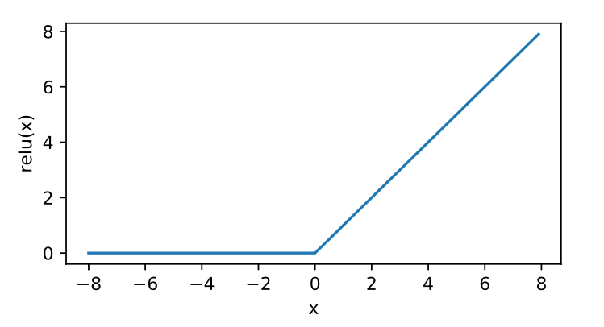
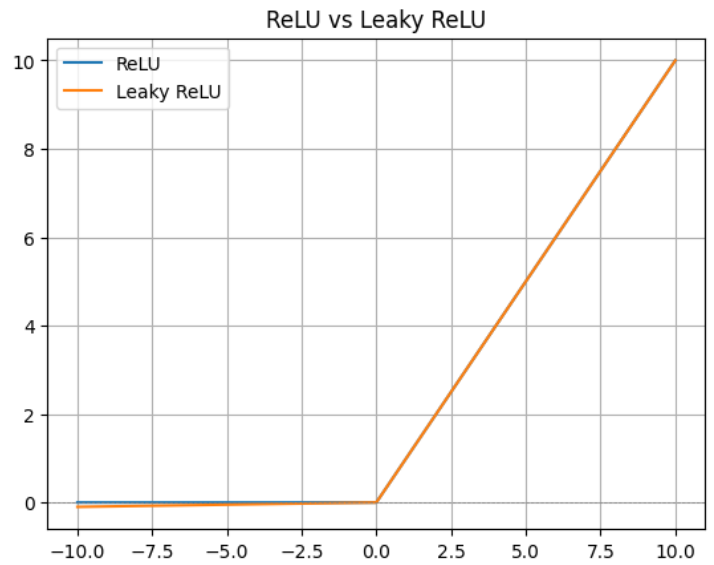

激活函数-ReLU-LeakyReLU
对激活函数：
- ReLU
- Leaky ReLU
进行定义介，包括公式定义、代码实现和优缺点，以及适用场景。
1 ReLU
公式：
$$
ReLU(x)=x^{+}=max(0,x)=\frac{x+|x|}{2}
$$

✅优点
- 计算简单：没有复杂的函数操作，计算速度快。
- 缓解梯度消失：相比 sigmoid/tanh，ReLU 在正区间的梯度恒为 1，有利于反向传播。
- 稀疏激活：当输入为负时输出为 0，有助于模型的稀疏性与鲁棒性。
⚠️ 缺点：死亡ReLU问题（Dying ReLU）
ReLU的导数：

当输入始终小于 0 时，ReLU 输出恒为 0，对应神经元在训练过程中就“死了”，不再更新权重
2 Leaky ReLU
为了缓解“死亡 ReLU”问题，Leaky ReLU 提出了一种小改动：
$$
\text{Leaky ReLU}(x) =
\begin{cases}
x & \text{if } x \geq 0 \
\alpha x & \text{if } x < 0
\end{cases}
$$
其中 $\alpha$ 是一个很小的常数，通常取值如 0.01。
斜率系数是在训练之前确定的，即在训练期间不会学习。这种类型的激活函数在我们可能遭受稀疏梯度的任务中很受欢迎，例如训练生成对抗网络。
✅ 优点
- 解决死亡问题：负值区域有一个小斜率，不会完全丢失梯度。
- 提升模型鲁棒性：在某些任务中可以提高模型性能。
⚠️ 缺点
- 仍然不是零均值输出，可能导致一定的偏移。
- 引入了超参数 $\alpha$，需要手动设定或调参。
代码以及可视化
Pytorch
1 | import torch.nn as nn |
可视化和对比
1 | import numpy as np |

4 总结与选择建议
| 特性 | ReLU（Rectified Linear Unit） | Leaky ReLU |
|---|---|---|
| 数学表达式 | f(x) = max(0, x) | f(x) = x (x > 0), αx (x ≤ 0), α 通常为 0.01 |
| 非线性 | 是 | 是 |
| 是否允许负值通过 | 否，负值直接输出 0 | 是，负值被缩放（αx） |
| 是否容易导致神经元失活 | 是（“神经元死亡” 问题） | 否，可以缓解该问题 |
| 计算效率 | 高（非常简单） | 略低（多一个乘法） |
| 使用的超参数 | 无 | 需要选择或设定泄漏因子 α |
| 常见使用场景 | 通用神经网络中默认的激活函数 | 在出现大量死神经元或训练不稳定时尝试使用 |
| 激活函数 | 推荐使用情况 | 理由说明 |
|---|---|---|
| ReLU | ✅ 默认优先选择（尤其是简单网络） | 计算开销小，效果好，已被大量实验证明有效，是深度网络的标准激活函数。 |
| Leaky ReLU | ⚠️ ReLU 出现大量“神经元死亡”时 | 引入负数区域的非零梯度，有助于避免神经元在训练中“死掉”，提升梯度流动性和收敛稳定性 |
- 如果你 初次搭建神经网络模型，建议从 ReLU 开始。
- 如果你在训练中发现 loss 不下降、部分神经元长期输出为 0，可以尝试切换到 Leaky ReLU。
- 在一些 对梯度传播更敏感的任务或深层网络中，Leaky ReLU 更能保障梯度不为 0。
为什么不直接一开始就用Leaky ReLU呢？
- ReLU更简单，而且计算代价更低。Leaky ReLU中的斜率参数在大规模模型中影响性能。
- α作为超参数，在不同任务或数据分布时适合各敏感值，需要调参。
激活函数-ReLU-LeakyReLU
https://zhouwentong7.github.io/2025/04/12/激活函数-ReLU-LeakyReLU/